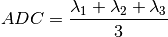

dipy.reconst.dti¶
Classes and functions for fitting tensors
-
class
dipy.reconst.dti.Tensor(data, b_values, grad_table, mask=True, thresh=None, fit_method='WLS', verbose=False, *args, **kargs)¶ Fits a diffusion tensor given diffusion-weighted signals and gradient info
Tensor object that when initialized calculates single self diffusion tensor [R31] in each voxel using selected fitting algorithm (DEFAULT: weighted least squares [R32]) Requires a given gradient table, b value for each diffusion-weighted gradient vector, and image data given all as arrays.
Parameters: data : array ([X, Y, Z, ...], g)
Diffusion-weighted signals. The dimension corresponding to the diffusion weighting must be the last dimenssion
bval : array (g,)
Diffusion weighting factor b for each vector in gtab.
gtab : array (g, 3)
Diffusion gradient table found in DICOM header as a array.
mask : array, optional
The tensor will only be fit where mask is True. Mask must must broadcast to the shape of data and must have fewer dimensions than data
thresh : float, default = None
The tensor will not be fit where data[bval == 0] < thresh. If multiple b0 volumes are given, the minimum b0 signal is used.
fit_method : funciton or string, default = ‘WLS’
The method to be used to fit the given data to a tensor. Any function that takes the B matrix and the data and returns eigen values and eigen vectors can be passed as the fit method. Any of the common fit methods can be passed as a string.
*args, **kargs : :
Any other arguments or keywards will be passed to fit_method.
common fit methods: :
- ‘WLS’ : weighted least squares
dti.wls_fit_tensor
- ‘LS’ : ordinary least squares
dti.ols_fit_tensor
See also
dipy.io.bvectxt.read_bvec_file,dipy.core.qball.ODFNotes
Due to the fact that diffusion MRI entails large volumes (e.g. [256,256, 50,64]), memory can be an issue. Therefore, only the following parameters of the self diffusion tensor are cached for each voxel:
- All three eigenvalues
- Primary and secondary eigenvectors
From these cached parameters, one can presumably construct any desired parameter.
References
[R31] (1, 2) Basser, P.J., Mattiello, J., LeBihan, D., 1994. Estimation of the effective self-diffusion tensor from the NMR spin echo. J Magn Reson B 103, 247-254. [R32] (1, 2) Basser, P., Pierpaoli, C., 1996. Microstructural and physiological features of tissues elucidated by quantitative diffusion-tensor MRI. Journal of Magnetic Resonance 111, 209-219. Examples
For a complete example have a look at the main dipy/examples folder
Attributes
DSelf diffusion tensor maskIf the model_params array has a mask, returns the mask evalsReturns the eigenvalues of the tensor as an array evecsReturns the eigenvectors of teh tensor as an array Methods
fa()Fractional anisotropy (FA) calculated from cached eigenvalues. md()Mean diffusitivity (MD) calculated from cached eigenvalues. -
D¶ Self diffusion tensor
-
evals¶ Returns the eigenvalues of the tensor as an array
-
evecs¶ Returns the eigenvectors of teh tensor as an array
-
fa()¶ Fractional anisotropy (FA) calculated from cached eigenvalues.
Returns: fa : array (V, 1)
Calculated FA. Note: range is 0 <= FA <= 1.
Notes
FA is calculated with the following equation:
-
ind()¶ Quantizes eigenvectors with maximum eigenvalues on an evenly distributed sphere so that the can be used for tractography.
Returns: IN : array, shape(x,y,z) integer indices for the points of the
evenly distributed sphere representing tensor eigenvectors of :
maximum eigenvalue :
-
md()¶ Mean diffusitivity (MD) calculated from cached eigenvalues.
Returns: md : array (V, 1)
Calculated MD.
Notes
MD is calculated with the following equation:

-
dipy.reconst.dti.decompose_tensor(tensor)¶ Returns eigenvalues and eigenvectors given a diffusion tensor
Computes tensor eigen decomposition to calculate eigenvalues and eigenvectors of self-diffusion tensor. (Basser et al., 1994a)
Parameters: D : array (3,3)
array holding a tensor. Assumes D has units on order of ~ 10^-4 mm^2/s
Returns: eigvals : array (3,)
Eigenvalues from eigen decomposition of the tensor. Negative eigenvalues are replaced by zero. Sorted from largest to smallest.
eigvecs : array (3,3)
Associated eigenvectors from eigen decomposition of the tensor. Eigenvectors are columnar (e.g. eigvecs[:,j] is associated with eigvals[j])
See also
numpy.linalg.eig
-
dipy.reconst.dti.design_matrix(gtab, bval, dtype=None)¶ Constructs design matrix for DTI weighted least squares or least squares fitting. (Basser et al., 1994a)
Parameters: gtab : array with shape (3,g)
Diffusion gradient table found in DICOM header as a numpy array.
bval : array with shape (g,)
Diffusion weighting factor b for each vector in gtab.
dtype : string
Parameter to control the dtype of returned designed matrix
Returns: design_matrix : array (g,7)
Design matrix or B matrix assuming Gaussian distributed tensor model. Note: design_matrix[j,:] = (Bxx,Byy,Bzz,Bxy,Bxz,Byz,dummy)
-
dipy.reconst.dti.ols_fit_tensor(design_matrix, data, min_signal=1)¶ Computes ordinary least squares (OLS) fit to calculate self-diffusion tensor using a linear regression model [1].
Parameters: design_matrix : array (g, 7)
Design matrix holding the covariants used to solve for the regression coefficients. Use design_matrix to build a valid design matrix from bvalues and a gradient table.
data : array ([X, Y, Z, ...], g)
Data or response variables holding the data. Note that the last dimension should contain the data. It makes no copies of data.
min_signal : default = 1
All values below min_signal are repalced with min_signal. This is done in order to avaid taking log(0) durring the tensor fitting.
Returns: eigvals : array (..., 3)
Eigenvalues from eigen decomposition of the tensor.
eigvecs : array (..., 3, 3)
Associated eigenvectors from eigen decomposition of the tensor. Eigenvectors are columnar (e.g. eigvecs[:,j] is associated with eigvals[j])
See also
WLS_fit_tensor,decompose_tensor,design_matrixNotes
This function is offered mainly as a quick comparison to WLS.

References
[1] (1, 2) Chung, SW., Lu, Y., Henry, R.G., 2006. Comparison of bootstrap approaches for estimation of uncertainties of DTI parameters. NeuroImage 33, 531-541.
-
dipy.reconst.dti.quantize_evecs(evecs, odf_vertices=None)¶ Find the closest orientation of an evenly distributed sphere
Parameters: evecs : ndarray
odf_vertices : None or ndarray
If None, then set vertices from symmetric362 sphere. Otherwise use passed ndarray as vertices
Returns: IN : ndarray
-
dipy.reconst.dti.wls_fit_tensor(design_matrix, data, min_signal=1)¶ Computes weighted least squares (WLS) fit to calculate self-diffusion tensor using a linear regression model [1].
Parameters: design_matrix : array (g, 7)
Design matrix holding the covariants used to solve for the regression coefficients.
data : array ([X, Y, Z, ...], g)
Data or response variables holding the data. Note that the last dimension should contain the data. It makes no copies of data.
min_signal : default = 1
All values below min_signal are repalced with min_signal. This is done in order to avaid taking log(0) durring the tensor fitting.
Returns: eigvals : array (..., 3)
Eigenvalues from eigen decomposition of the tensor.
eigvecs : array (..., 3, 3)
Associated eigenvectors from eigen decomposition of the tensor. Eigenvectors are columnar (e.g. eigvecs[:,j] is associated with eigvals[j])
See also
Notes
In Chung, et al. 2006, the regression of the WLS fit needed an unbiased preliminary estimate of the weights and therefore the ordinary least squares (OLS) estimates were used. A “two pass” method was implemented:
- calculate OLS estimates of the data
- apply the OLS estimates as weights to the WLS fit of the data
This ensured heteroscadasticity could be properly modeled for various types of bootstrap resampling (namely residual bootstrap).

References